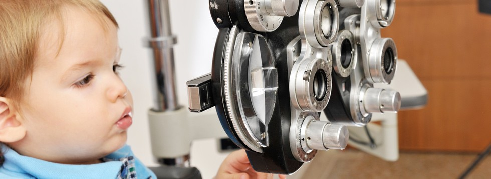

Estamos enfocados en la corrección de problemas visuales en todas las edades.
Optometría Pediátrica
El desarrollo visual se realiza de manera progresiva desde que nacemos y bajo condiciones de estimulación. Este desarrollo es particular en cada individuo influenciado por diversos factores. Los exámenes visuales durante estos periodos son esenciales para prevenir problemas visuales que van a condicionar el aprendizaje y desarrollo del niño y que permanecerán toda la vida si no se trata. Cuanto más tiempo lleve instaurado un problema visual, mayor es la adaptación del cerebro a ella y más cuesta revertirla.
En la población pediátrica es fundamental la prevención de la ambliopía a través de una detección temprana de los factores que la causan, la detección de errores refractivos significativos, controlar la progresión de la miopía, tratamiento y rehabilitación de estrabismos, enfermedades oculares o deficiencias en la visión del color.
Optometría Geriátrica
Las características de la población geriátrica asociada a la mayor esperanza de vida hace necesario ofrecer o mantener el máximo nivel de calidad visual que permita al paciente una buena calidad de vida.El rendimiento visual a determinada edad es menor, y el envejecimiento físico produce cambios en el comportamiento y las costumbres de los pacientes.
Muchos de los problemas visuales, tienen solución, pero en determinadas ocasiones por desatención, no se les da solución. En determinados casos deberemos recurrir a las ayudas de baja visión. Debemos tener siempre en cuenta que independientemente el estado físico del paciente, un buen rendimiento visual puede contribuir a una mejora en su calidad de vida.
Con ayudas ópticas, podemos obtener una mejoría en la calidad visual de pacientes que padezcan alguna patología ocular que reduzca la capacidad o limitación visual.